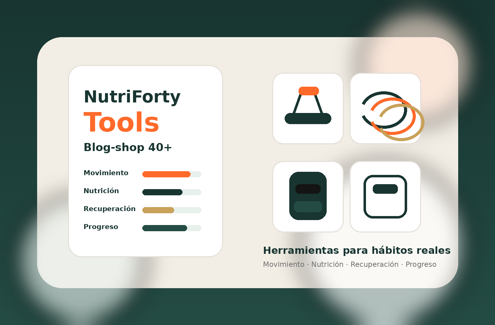

Catálogo editorial
Tools recomendados por criterio NutriForty.
Filtra por pilar, nivel de precio o necesidad. Cada producto explica para quién es, qué mirar antes de comprar y cómo encaja en una rutina 40+.

Filtra por pilar, nivel de precio o necesidad. Cada producto explica para quién es, qué mirar antes de comprar y cómo encaja en una rutina 40+.
